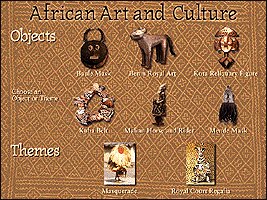

The Minneapolis Institute of Arts
Main Menu ~ Interactive Media Programs ~ Interactive Museum Maps ~ Back ~ Next
African Art and Culture
 (c) 65k
Location: African Art, 2nd floor
Choose from eight mini-documentaries that explore an array of objects and themes found in traditional African art. Each will help you better understand and appreciate the objects within the gallery that were designed for ceremonial and everyday use. See a dance in a traditional African ceremony, for example, or compare the costumes of royalty or learn about the creation of a Benin bronze.